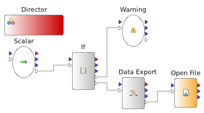

7. Workflow Perspective¶
The Workflow perspective....
7.1. Maths Actors¶
7.1.1. Add¶
An actor to add any data, for instance images, together. The actor has two inputs ‘a’ and ‘b’. Multiple inputs may be connected to both a and b. In this case use the Expression Mode parameter to define the behavior of the actor with the multiple input data. The output is a data set named either with the object name or derived from the input variable ‘file_name’ depending on the value of the ‘Name Mode’ attribute.
7.1.2. Subtract¶
An actor to subtract one array from another, for instance images. The actor has two inputs ‘a’ and ‘b’. Multiple inputs may be connected to both a and b. In this case use the Expression Mode parameter to define the behavior of the actor with the multiple input data. Note you can repeatedly subtract one image from a pipeline of images by using ‘a’ for the pipeline and ‘b’ for the static image. The output is a data set named either with the object name or derived from the input variable ‘file_name’ depending on the value of the ‘Name Mode’ attribute.
7.1.3. Multiply¶
An actor to multiply arrays, for instance images, together. The actor has two inputs ‘a’ and ‘b’. Multiple inputs may be connected to both a and b. In this case use the Expression Mode parameter to define the behavior of the actor with the multiple input data. The output is a data set named either with the object name or derived from the input variable ‘file_name’ depending on the value of the ‘Name Mode’ attribute.
7.1.4. Divide¶
An actor to divide arrays, for instance images, together. The actor has two inputs ‘a’ and ‘b’. Multiple inputs may be connected to both a and b. In this case use the Expression Mode parameter to define the behavior of the actor with the multiple input data. The output is a data set named either with the object name or derived from the input variable ‘file_name’ depending on the value of the ‘Name Mode’ attribute.
7.1.5. Median¶
An actor to take a median of arrays, for instance images, together. The actor has two inputs ‘a’ and ‘b’. Multiple inputs may be connected to both a and b. In this case use the Expression Mode parameter to define the behavior of the actor with the multiple input data. The output is a data set named either with the object name or derived from the input variable ‘file_name’ depending on the value of the ‘Name Mode’ attribute.
7.1.6. Maths Actor Attributes¶
- Name - Sets the name used in the workflow. Set to something short or it will truncate (the tooltip shows the full name in this case).
- Expression Mode - Choose between different expression modes. For instance evaluation of the add every time a message is received, once all have been received or caching input to b and completing the add every time a changes.
- Memory Mode - This parameter allows the original data to be modified in memory so save a copy being created. This operation however can have unforeseen downstream effects.
- Name Mode - This attribute is used to define how the output data is named. It either uses the actor name, reads the value of the input variable ‘file_name’ and tried to assign a data set name from the file or just operates on the data leaving the name unchanged.
7.2. Flow Control Actors¶
7.2.1. If¶
This actor allows different paths to be taken in the workflow depending on logical expressions. As an example see the “if_example.moml” workflow in workflows/examples:
The output port have different names which can be visualised by hoovering the mouse pointer over the ports:

The different output ports of the if actor are attributed different expressions. These expressions are visualised in the actor attributes view:

In this example the port ‘output’ is used if x!=1 and the port ‘x==1’ is used if x==1. The number of output ports and their expressions can be edited using the ‘Create expressions’ dialog:

NOTE! There must always be one port called ‘output’.
7.3. Hardware Actors¶
7.3.1. Tango Motor¶
This actor is a transformer type meaning it receives and transmits messages but does not create messages or act as a sink. The actor attaches to a Tango server which provides an attribute for setting value of hardware and reading value. In fact the Tango attribute does not have to move a motor, it can result in any action when the attribute changes.
To set up the Tango connection go to Window->Preferences->Data Analysis->Tango. The system will attempt to automatically set the correct properties on a beamline by reading the environment variables when it starts for the first time. You will likely need to set the spec session name however.
The ‘Motors’ attribute in the actor optionally sets the motors and always reads their value, passing this downstream in the pipeline. Typically the ‘Motor Name’ will be the URL to the TangoDevice after the beamline name. Something like ‘motors/phi’ normally. Currently the connection is not generic, only exposed motors in tango can be connected to - not everything. However arbitrary spec commands can be sent with the ‘Spec Command’ transformer.
Attributes
- Name - Sets the name used in the workflow. Set to something short or it will truncate (the tooltip shows the full name in this case).
- Expression Mode - Options for specifying the flow control of the actor. For instance the actor will run on every message received or block until all messages are received. Each actor can have different options for the values of Expression Mode.
- Motors - Parameter for editing the connections to hardware made when the actor is run. In this case a popup form is shown for adding one or more connections which are always read and optionally written. Upstream variables can be used in substitution notation ( ‘${var_name}’ for instance) in the value and the ‘Motor Name’ is the last part of the Tango url after the beamline, for instance: ‘motors/phi’.
7.3.2. Spec Command¶
This actor sends spec commands into spec. These can either be individual commands, the result of each of which is recorded in a variable and passed on or a single macro file, which does not record output other than in the log file. All commands sent to spec are wrapped in an eval(‘ ‘) statement which means they can be typed in to the user interface the same as if entering commands directly into spec. If using the macro file option, you can right click on the actor and open an substitution editor for the maco. This allows upstream variables to be inserted to the macro by highlighting and double clicking the variable on the left. This actor requires tango servers to work and requires the correct tango client settings under ‘Window->Prefrences->Data Analysis->Tango’.
Attributes
- Name - Sets the name used in the workflow. Set to something short or it will truncate (the tooltip shows the full name in this case).
- Commands - The individual commands to run, the result of each of which may be read back into a separate macro.
- Spec Macro - Reference a spec macro file with this parameter or start a new file. Then right click on the editor and open the editor. Values from up-stream can be substituted in.